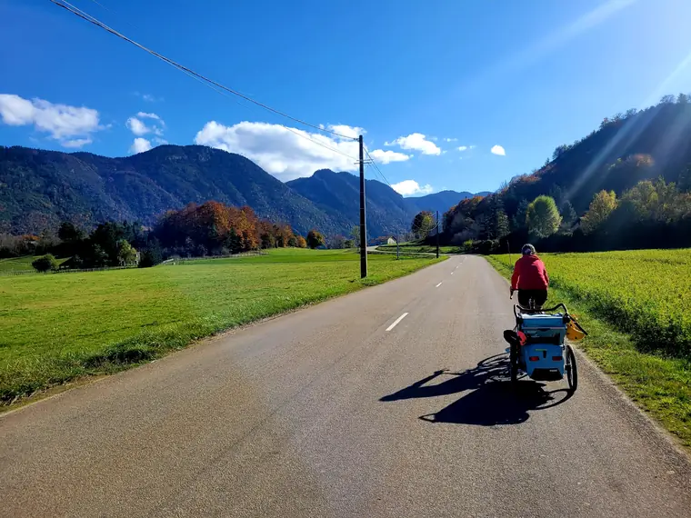
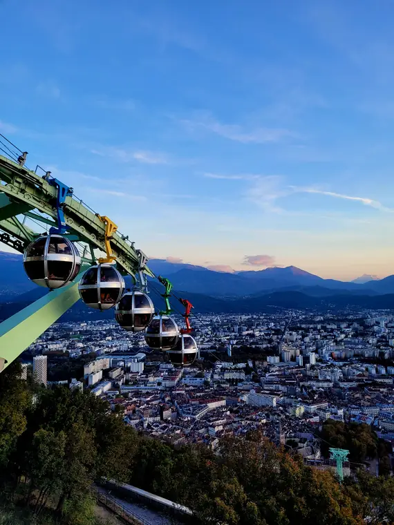
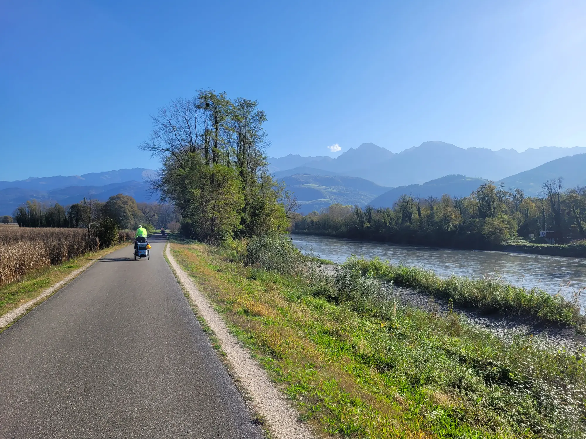
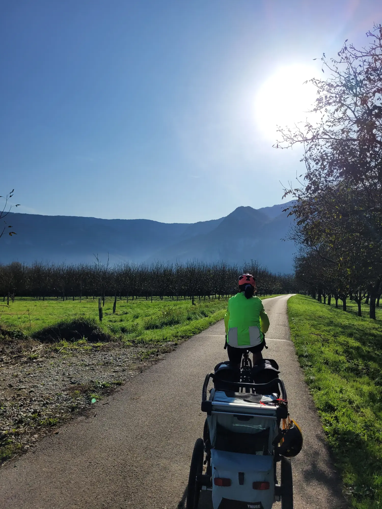
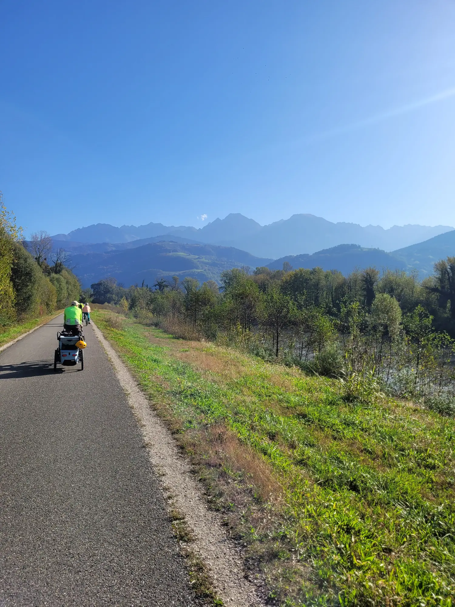

…reprendre confiance
On commence là où vous en êtes. Pas de performance, pas de pression : on avance ensemble, et on s'arrête quand on veut.
Bonjour, moi c'est Cass.
Je vous emmène à vélo autour de Grenoble, à votre rythme. Que vous ayez 6 ans ou 80 ans, que vous n'ayez pas pédalé depuis vingt ans ou que vous rêviez de cols, il y a une sortie pour vous.

On commence là où vous en êtes. Pas de performance, pas de pression : on avance ensemble, et on s'arrête quand on veut.

Les quais, les bulles de la Bastille, les digues de l'Isère : la ville et ses montagnes se découvrent mieux au rythme du pédalage.

Une mer de nuages, un pique-nique sous les noyers, un tampon de plus sur le passeport. Le genre de journée qu'on raconte longtemps.

De 2 heures à la journée, en famille ou entre amis, sur six circuits autour de Grenoble.
Voir les balades
De la première poussée aux premiers trajets en ville, en jouant.
Voir les cours enfants
Se remettre en selle en douceur, essayer le vélo électrique, trouver le vélo adapté.
Voir l'accompagnementLe vélo m'a fait découvrir des endroits que je n'aurais jamais vus autrement. Avec ma famille, on l'a pris pour traverser la Corée du Sud, le Japon, l'Italie, et en 2024 pour descendre la Belle Via jusqu'aux falaises du Vercors, notre fille dans la remorque.
Aujourd'hui, je me forme pour devenir monitrice, parce que j'ai envie de partager ça. Voir un enfant lâcher les petites roues, une grand-mère retrouver le plaisir de sortir à vélo, des visiteurs s'arrêter net devant la Chartreuse au coucher du soleil : c'est pour ces moments-là que je pédale.
Alors venez rouler avec moi. Je m'occupe du reste.
Cassandre
Nos voyages à vélo sont racontés sur The Quiet Adventure.
Une question, une date, un groupe ? Décrivez votre projet en quelques lignes et je vous réponds pour l'organiser ensemble.